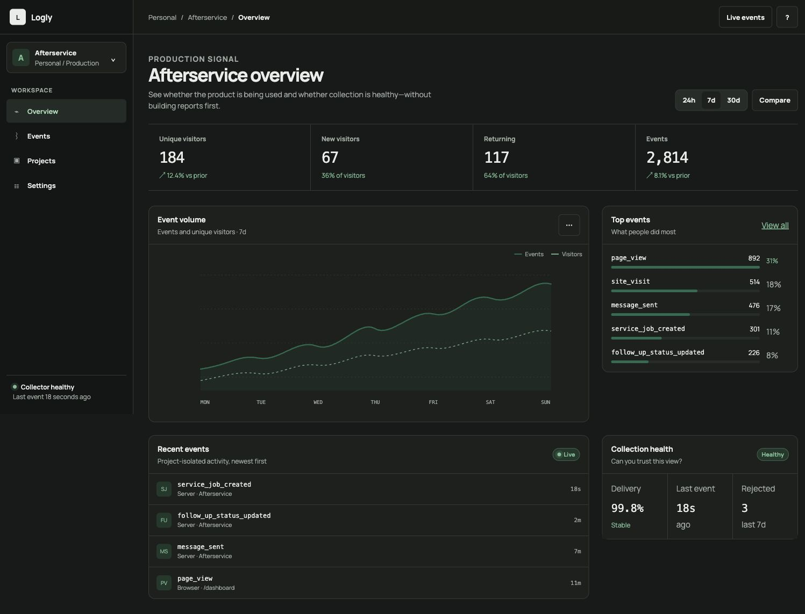
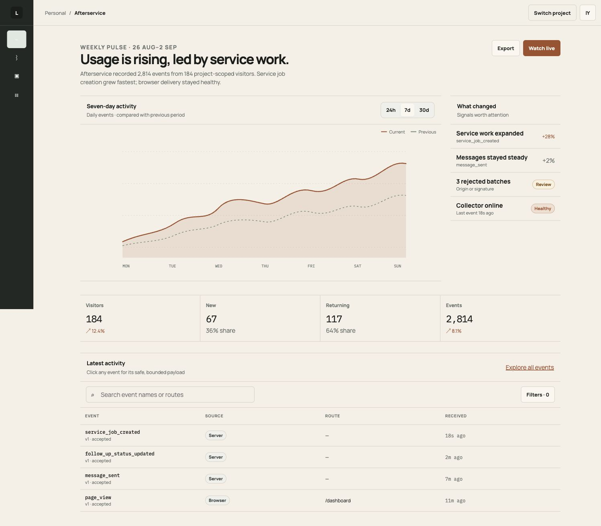
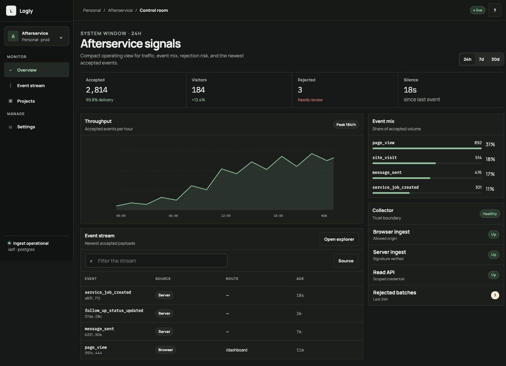

91 / 100 · RECOMMENDED
A — Signal Desk
Overview concept: chart-first split workspace with a clear metric strip, top events, live activity, and collection health.
Three clean-room dashboard directions grounded in the real local app, OpenPanel’s project orientation, current analytics references, and standard shadcn composition.
Best balance of trend, event investigation, project context, collection trust, and thin-product scope.

Overview concept: chart-first split workspace with a clear metric strip, top events, live activity, and collection health.

Narrative weekly conclusion with a broad chart and concise “what changed” side context.

Dense operational view emphasizing throughput, rejected events, and collector boundaries.